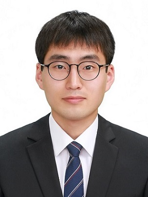

KDT(경북대 융복합연구원) AI·데이터 과정에서 기업 협업·경진대회 포함 15개+ 프로젝트를 수행했습니다.
⭐⭐⭐ 주력 · ⭐⭐ 활용 · ⭐ 경험
중요도순. 카드 클릭 시 저장소로 이동합니다.
양품만 학습(비지도 OCC)해 EV 배터리 버스바의 외관·구조 결함을 탐지.
공고 검색→AI 분석→사업계획서 초안→평가→Export 원스톱 풀스택 AI SaaS.
도메인 특성에 맞춰 파인튜닝/RAG/임베딩을 매칭한 멀티도메인 챗봇.
YOLO 탐지 + ResNet 2차 분류 Hybrid로 구름·안개 오탐을 제거.
선관위+예측시장+뉴스 감성분석을 결합한 풀스택 선거 분석 대시보드.
30문항 설문과 견종 특성을 가중치 스코어링으로 매칭하는 추천 플랫폼.
정상만 학습해 결함을 잡는 비지도 이상탐지. 5개 모델을 F2-score로 비교.
재고 데이터로 폐기 위험도를 예측. 정확도 1.00을 의심해 데이터 누수를 검증.